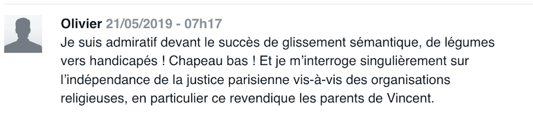

Homo sacer idéal: court historique de l'"évolution" du droit du handicap en France.
9 Avril 2019Dupin contre la France:le triomphe de la logique ségrégationniste
25 Avril 2019Sur la valeur et le coût d’une vie, sur le droit “spécifique”, l’invisibilité et l’ignorance.
17 Mai 2019Sur le droit d'avoir les droits
25 Juin 2019L'inclusion scolaire et sa récupération politique
24 Juanvier 2022Homo sacer idéal: court historique de l'"évolution" du droit du handicap en France.

On soulignera ici le fait que la justice et les autorités françaises
semblent largement ignorer dans les faits la Convention internationale sur les droits des personnes handicapées.
Mais aussi le paradoxe d’un déploiement important de moyens matériels, hélas pas dans le sens de l’inclusion effective,
bien au contraire. Le regard de l’ONU (rapport d’octobre 2017) sur la politique française envers le handicap est
particulièrement sévère, mais il offre les points d’appui nécessaires pour combattre l’injustice et les maltraitances qui
en découlent. Il souligne crûment que la majorité des autorités publiques et prestataires rencontrées lors de la visite de
la rapporteuse ne sont pas informées des dispositions de la CDPH, et que la voix des personnes handicapées est insuffisamment
prise en compte.
Le rapport de l’ONU pointe de plus que la loi sur l'égalité des chances de 2005 donne une définition du handicap ne
correspondant pas à la Convention. Ou encore que les données sociodémographiques manquent. De plus, l’accent est, en
France, mis sur la déficience de l'individu et non pas sur les manques relatifs aux services apportés, ce qui contribue
à l'isolement des personnes ainsi qu'au retard des politiques publiques. Il souligne la nécessité d’une politique du
handicap fondée sur les droits.
Décalage français
Catalina Devandas Aguilar, la rapporteuse spéciale de l'ONU, (dont nous reproduisons en fin d’article des extraits de ses
observations) constate que le code electoral, le code civile et la loi sur la santé mentale ne sont pas conformes à l’article
12 de la Convention relative aux Droits des Personnes Handicapées (CDPH): L’harmonisation juridique avec la Convention reste à opérer. Les retouches récentes apparaissent comme cosmétiques : l’exemple des droits de vote et de mariage autorisés
sans contrainte pour les personnes protégées mais sans tenir compte de leur éventuel confinement en institution,
suffit à faire comprendre la superficialité et l'inutilité du changement.
Le chemin à parcourir est encore long...
1/ Loi du 11 février 2005
Article 114 "Constitue un handicap, au sens de la présente loi, toute limitation d'activité ou restriction de
participation à la vie en société subie dans son environnement par une personne en raison d'une altération
substantielle, durable ou définitive d'une ou plusieurs fonctions physiques, sensorielles, mentales, cognitives
ou psychiques, d'un polyhandicap ou d'un trouble de santé invalidant."
Cette définition dit: le handicap réside non pas dans l’altération d’une fonction, mais dans la limitation subie de
la participation à la vie en société. Alors on prend acte de cette limitation, ou bien on cherche à en atténuer la
portée? Le choix politique est dans cette alternative. En France il semble qu’on prend acte avec fatalisme, en
cherchant à dispatcher les uns et les autre dans de lieux « appropriés », comme on va le constater à la lecture
ci-dessous, et comme les données officielles (DREES) le démontrent à l’envie.
2019 ce qui change :
Quatre droits sont acquis à vie, à partir du 1/01/19: l'AAH (allocation adulte handicapé), la RTQH (reconnaissance
qualité travailleur handicapé), la carte mobilité (transports stationnement etc), l’AEEH (allocation éducation enfant
handicapé). L’AAH passe à 860 € par mois (+ 5 %). Le droit de vote et le droit de se marier sans en passer par un juge
sont affirmés pour les personnes protégées. Cette mise en conformité reste formelle pour toutes les personnes mises
sous tutelles et confinées en institution, puis qu’elles ne peuvent, de fait, pas disposer d’elles-mêmes.
2/ Loi du 5 mars 2017, personnes protégées.
D'après les données du Ministère de la Justice, citées dans le rapport de l’ONU, il y aurait quelques 385 000 personnes
handicapées mises sous tutelle et 350 000 sous curatelle. Les personnes autistes et celles avec handicap intellectuel sont
placées d'office sous tutelle ou curatelle. La mise sous tutelle entraîne un risque presque systématique
d'institutionnalisation, ainsi qu'une privation de droits de fait.
La loi du 5 mars 2007 vise à renforcer dans le Code civil l’autonomie de
la personne protégée, en affirmant le principe de l’information par le tuteur ou le curateur du majeur protégé sur sa
situation personnelle et la gestion de ses biens, la recherche de son consentement ou de son adhésion. Elle rappelle
le principe de conservation de son lieu de vie et de ses objets personnels ainsi que le principe de liberté du choix
de sa résidence et de ses relations avec les tiers.
Mais rappeler des principes est une chose, préciser des obligations en est une autre. Rappeler l’autonomie de la personne
protégée, et non ses droits fondamentaux, apparaît parfaitement ironique, puisque la personne est protégée en raison de son
manque suppose d’autonomie. Et l’on sait bien, particulièrement en France, que des principes à la réalité, il y a
parfois un fossé : celui de l’inertie et des mentalités conservatrices.
La loi du 5 mars 2007, concernant la protection juridique des majeurs, rappelle, entre autres, au chapitre 7, les dispositions
suivantes du Code civil :
Art. 432: " Le juge statue, la personne entendue ou appelée. L'intéressé peut être accompagné par un avocat ou,
sous réserve de l'accord du juge, par toute autre personne de son choix. Le juge peut toutefois, par décision
spécialement motivée et sur avis du médecin mentionné à l'article 431, décider qu'il n'y a pas lieu de procéder à
l'audition de l'intéressé si celle-ci est de nature à porter atteinte à sa santé ou s'il est hors d'état d'exprimer
sa volonté."
Cet article s’avère en contradiction avec les dispositions de la CIDPH car plus restrictif. La capacité juridique supposerait
que « l’intéressé(e) » doive être assistée d’un avocat et pas seulement « puisse » l’être. De plus, la Convention stipule
expressément qu’on ne peut se dispenser d’auditionner la personne concernée quel que soit son handicap, et avec
des moyens justement appropriés : visiblement le législateur a omis d’ajuster le droit lors de la ratification
survenue en 2010.
Art. 459-2. - La personne protégée choisit le lieu de sa résidence.
Elle entretient librement des relations personnelles avec tout tiers, parent ou non. Elle a le droit d'être visitée et,
le cas échéant, hébergée par ceux-ci. En cas de difficulté, le juge ou le conseil de famille s'il a été constitué
statue.
Dans la dernière remarque, que signifie « en cas de difficulté »? La formule peut être interprétée de façon
discrétionnaire. Et c'est très souvent le cas : dans notre propre expérience, c'est même le cœur du problème.
Ici encore, on n’évoque pas l’obligation d’entendre la personne protégée elle-même. Elle n’est plus sujet de droit.
Art. 475. - La personne sous tutelle est représentée en justice par le tuteur.
Le principe de représentation en justice par le tuteur apparaît contradictoire avec la CDPH. La personne protégée
doit bénéficier de son propre avocat. Même remarque que pour les points précédents.
3/ Conséquences de la protection : placements et soins psychiatriques, loi du 5/07/2011
Le système français de protection sociale est décrit dans le rapport de l’ONU comme ayant une approche paternaliste
d'isolement plutôt que favorisant des mesures d'accès à la citoyenneté et la participation à la collectivité. Il privilégie
le placement en institution plutôt que la vie en société. La demande de placement en établissement est massive, faute de
facilités alternatives favorisées. Environ 10 000 enfants et 200 000 adultes résident dans des institutions de toutes sortes.
On se reportera aux données de la DREES pour les précisions, les dernières publiées datant de 2014. Ces dernières ne
comptabilisent pas les hospitalisations mais seulement établissements et services spécialisés.
Le Code de Santé Publique, modifié par la loi no 2011-803 du 5 juillet 2011, régit les conditions et procédures relatives
aux soins psychiatriques sans consentement, à la demande d’un tiers ou d’un représentant de l'État. Or, les personnes avec
handicap psychosocial demeurent en hôpital psychiatrique durant de longues périodes, n'étant pas nécessairement informées
de leurs droits à rencontrer le juge des libertés et détention. En conséquence, il est très difficile de s’opposer à ces
hospitalisations, les juges se fiant principalement à l'avis des médecins. Ici encore, l’expertise médicale, dans bien des
cas très formelle (parce que résultant d’une consultation ponctuelle), s’avère prendre force de loi, au détriment de toute
autre forme d’information sur la situatio, et donc de consultation appropriée de la personne.
Conclusion
On aura remarqué l’absence de franchise politique des pouvoirs publics français sur la question du sort des
handicapés, en particulier devenus majeurs. La comparaison entre les formulations rhétoriques du droit français
(par exemple l’expression « en cas de difficulté » dans l’article 459-2 sur la liberté de résidence de la personne
protégée: cette mention ouvre la porte à toute restriction arbitraire de cette liberté) et celles beaucoup plus
limpides de la CDPH est édifiante. Comme si le droit français fournissait systématiquement lui-même le moyen de
l’affadir ou le détourner. Compte tenu de l’ampleur évaluée de la population concernée, mais aussi des pratiques
aussi bien administratives que judiciaires, ou encore des professionnels impliqués, l’absence de données précises
(et surtout les données qui évitent des questions essentielles, telles que le taux de satisfaction des situations
des personnes protégées, et celui de leur entourage) ne peut être perçue autrement que comme une volonté politique
implicite de laisser les problèmes et manquements au droit sous le tapis.
haut de page
Dupin contre la France: le triomphe de la logique ségrégationniste

dessin de DP
Un cas "parmi les autres"?
La décision dans l’affaire Dupin contre la France1 concerne une question qui est portée régulièrement devant la Cour
Européenne (et pas uniquement contre la France): est-ce que l’éducation inclusive est un droit inconditionnel ou est-il
soumis à des conditions? Notons de suite que la CEDH penche pour la deuxième réponse et cela, a contrario des cas jugés
précédemment (Çam, contre Turquie, Enver Sahin contre Turquie 2).
Le cas français est different en ce qu’il concerne un enfant atteint d’autisme avec un retard développemental important,
alors que le cas exemplaire de Çam concerne un handicap sensoriel. A contrario de ce qu’on peut supposer, les litiges
concernant le handicap dit mental (intellectuel) commencent seulement maintenant à arriver devant la CEDH: vu les délais
des justices internes (en tous cas en France) on peut en conclure que la conscience et l’exigence de l’inclusion nées dans
le sillon de la Loi 2005 arrive seulement maintenant à franchir l’étape de l’instance européenne. Des décisions sur les
cas portés par d’autres pays (la Roumanie est citée fréquemment) sont attendues prochainement.
Il est à noter que, contrairement à des réclamations émanant de personnes ou de proches de personnes handicapées jugées
habituellement par une Chambre, le cas Dupin a été jugé par le Comité des trois juges (qui ne statue que sur les
réclamations moins complexes) alors que le cas était suffisamment nouveau et la jurisprudence attendue très importante
pour la suite.
Dans le cas Dupin, il s’agit d’un enfant au moment des faits (le garçon nommé E. dans le texte) qui est placé en IME
en 2013. Il résidait déjà avec son père qui voulait ce placement (et pas avec
la mère qui n’en voulait pas et qui est à l’origine de la démarche judiciaire réclamant la scolarisation en milieu ordianire).
La situation est classique en France, car ayant attiré le questionnement de l’ONU à ce sujet lors de l’audition de la France par le Comité des doits
d'enfant: la justice donne l’enfant au parent qui est d’accord avec l’institutionnalisation. Certes, les cas avec désaccord
parental sont des plus compliqués, mais ce qui est frappant, c’est que non seulement les instances judiciaires
françaises, mais aussi la CEDH, dans ce cas précis, évoquent la volonté du père d’institutionnaliser l’enfant comme un
argument supplémentaire . Le droit propre de la personne handicapée devient sujet de caution des accords et
désaccords parentaux.
"L'oubli" de la Convention.
La requerente a évoqué l'article 24 de la Convention Internationale des Droits des Personnes Handicapées (CIDPH) devant la
Cour de la Cassation mais étrangement, cette Convention est absente des debats et attendues de la CEDH. Cela peut paraitre
invraisemblable de la part d’une instance internationale dont on attendrait qu’elle hisse les accords internationaux au
premier rang juridique. Mais c’est un fait, et de surcroît même pas isolé pour les décisions récentes de la CEDH : un autre
cas - cette fois d’un homme âgé sous le régime de la curatelle renforcée à qui on a dénié, en Octobre 2018 (post-mortem, car
l’homme est décédé avant le traitement de son cas par la Cour) le droit de se marier en ignorant l”article 12 de la CIDPH
sur la capacité juridique, tout en avançant une interprétation très à la française de l’article 12 mais cette fois de la
Convention Européenne des Droits Humains (CEDH): une tranchante analyse de ce cas est donnée dans le
Strasbourg Observers blog.3
La deuxième tendance que l’on ne peut voir autrement que comme un signe de retour en arrière de cette instance
européenne, est sa fidélité au raisonnement des instances françaises alors qu’on serait en droit d’attendre une
posture critique (sinon, demanderons-nous, “à quoi ça sert?”). En effet, à aucun moment les affirmations ségrégatives
des autorités françaises ne semblent choquer les trois juges Européens :
“la Maison départementale des personnes handicapées d’Ille-et-Vilaine, maintint sa position, faisant valoir qu’une
orientation en CLIS TED (trouble envahissant du développement) « qui est judicieuse pour les enfants entrant ou
progressant dans le rapport aux autres ne conviendrait pas à E.”
“Cette expérience a révélé, comme l’a indiqué la CNITAAT, qu’il avait peu de contacts avec les élèves, ne parlait pas,
n’écrivait pas, ne lisait pas, ce qui laisse entendre, d’après cette juridiction, qu’il n’était pas capable d’assumer
les contraintes et les exigences minimales de comportement qu’implique la vie dans une école normale.”
“Elles (autorités françaises) ont opté pour une éducation appropriée à ses besoins, en milieu spécialisé, une
orientation dont il convient de noter qu’elle satisfait son père qui en a la garde”.
Nous sommes devant une affirmation nette et appuyée d’un modèle d’intégration - et non pas d’inclusion - qui
règne en France et est appliqué autant qu’il se peut par l’Education Nationale. Ce n’est pas à l’école de s’adapter à
l’enfant, comme on a pu le croire en lisant le nouveau cadre de l’Ecole pour tous adopté en grande pompe sous la présidence
de F. Hollande, mais bel et bien l’élève qui doit “atteindre le niveau” et “répondre à certaines exigences” pour avoir le
droit de côtoyer les pairs ordinaires - même de loin puisque scolarisé en ULIS.
Adieu language (qui a du sens).
L’autre problème, corrélatif, c’est la reprise du langage vide de sens des attendus français par le Comité du Strasbourg:
“il ressort du dossier à sa disposition que cette prise en charge scolaire, certes sur des temps partiels,
convient à son (celui de l’enfant) épanouissement (paragraphe 15 ci‑dessus).”
On ne sait pas (et le saura-t-on jamais?) ce qui est véritablement derrière l’affirmation de “l’épanouissement” de cet
enfant. Le contrôle réel des services médicaux-sociaux n’existe pas en France. Les mots sont manipulés librement dans
une euphorie qui est d’autant plus incontrôlable que incontrôlée. De temps à l’autre, par grand hasard, on arrive à
entrevoir une lueur de vérité (comme la maltraitance dans une institution) : le prix payé par les personnes ayant osé
la révéler est très prohibitif et participe, il faut le croire, à une adhésion encore plus fidèle de ceux qui “restent
à bord” à la manipulation dominante du langage.
Ce remplacement du sens et cet enfermement dans des formules aussi ouvertement inadéquates (un enfant s’épanouissant
en institution en compagnie - uniquement - des trois autres qui ont tous le même handicap que lui) - cela ne nous
rappelle-t-il pas quelque chose? Si la communication aujourd’hui tourne, à tous les niveaux, en circuit fermé et
totalement détaché de la réalité, le langage utilisé dans la communication officielle et juridique du handicap brille
par son caractère artificiel et cache-misère. Cela peut constituer un obstacle à la juste appréhension de l’affaire
par la CEDH : il est d’autant plus urgent, pour nous, ainsi que pour la justice, de trouver des repères dans le flot
de communication fortement polluée par conflits d’intérêt et mentalité ségrégationniste persistant en France malgré
toutes les bonnes paroles.
C'est exactement ce qu'on constate dans un article écrit par Roseline Letteron, professeure de droit public à
l'Université Paris-Sorbonne.4 En donnant entièrement raison à la CEDH dans la décision dans le cas Dupin contre la
France, Mme Letteron fait preuve d'une ignorance totale, non pas seulement de la CIDPH, mais également de la Loi du
11 février 2005. Il est stupéfiant de lire l'affirmation de l'auteure selon laquelle le droit à l'instruction ne
serait aucunement garanti en France : « l'article L 112-2 du code de l'éducation se borne à garantir à chaque personne
handicapée un "droit à l'évaluation de ses compétences, de ses besoins et des mesures mises en oeuvre" dans le cadre d'un
parcours de formation qui doit être défini en fonction de sa situation personnelle. »
Le raisonnement se poursuit, qui placerait cet article comme alternative au droit à l'éducation garanti dans la Constitution
et par l'article 2 du Protocole n°1 de la Convention européenne des droits de l'homme. De même, Mme Letteron n'a pas pris le
soin d'étendre sa lecture de l'article 24 de la CIDPH jusqu'au paragraphe 2, car elle affirme, en dépit de ce que
dit ce paragraphe, qu'« il ne s'agit pas nécessairement d'un droit à l'instruction en milieu scolaire ordinaire »
alors que ledit article stipule que « les États Parties veillent à ce que : a) Les personnes handicapées ne soient pas
exclues, sur le fondement de leur handicap, du système d’enseignement général (...) ».
On reste songeur devant une telle ignorance du droit international et national par une enseignante du droit à la
Sorbonne, mais on commence à comprendre mieux les sources de l'ignorance et négation des droits des personnes
handicapées en France. La logique ségrégationiste est admise comme base, et tout ce qui n'y correspond pas est ignoré,
au mépris de la loi et des convention internationales qui s'imposent sur la loi nationale en vertu de l'article 55 de
la Constitution française.
Provoquer le changement.
Il faut le répéter, la Convention Internationale des Droits des Personnes Handicapées existe, elle est
opérationnelle en France depuis 2010, année de sa ratification, et elle prime sur la loi nationale. Certes, il s’agit
souvent d’une aspiration et d’une affirmation de valeurs, plus que du cadre strictement juridique, mais ces valeurs
et cette aspiration sont bien précises et doivent devenir la référence pour la jurisprudence. Le Convention existe
précisément pour provoquer le changement. Or, ce n’est pas le cas en France, où la Convention est largement ignorée.
Et le silence de la presse généraliste française sur ce constat fait par la Rapporteuse Spéciale de l’ONU est tout
simplement assourdissant.
Mais encore plus assourdissante est une sentence de l’instance européenne de laquelle on aurait attendu un respect de
la CIDPH.
Derrière le cas Dupin, on devine (encore) un destin sacrifié. La France et ses institutions semblent être incapables
de prendre la mesure de ces drames humains, de se détacher du modèle ségrégationniste qui revient par la fenêtre si
on le chasse (très timidement) par la porte.
Actuellement, la seule chance d’enrayer la régression du modèle social de l’inclusion est la Convention. Nous devons
la promouvoir et nous battre pour son respect. Ne laisser passer aucun “oubli” ni relativisation du type “c’est de
l’utopie”. La vie parmi ses semblables, et non dans un lieu fermé, avec les sorties hebdomadaires dans un parc public
n’est pas de l’utopie. C’est un droit.
haut de page
1. source: https://hudoc.echr.coe.int/eng#{%22itemid%22:[%22001-189671%22]}
2. source: https://hudoc.echr.coe.int/eng#{%22fulltext%22:[%22%C3%A7am%20v%20turkey%22],%22documentcollectionid2%22:[%22GRANDCHAMBER%22,%22CHAMBER%22],%22itemid%22:[%22001-161149%22]}
3. source: https://strasbourgobservers.com/2018/12/03/loneliness-that-is-good-for-you-the-european-court-addresses-the-right-to-marry-of-people-with-disabilities/
4. source: https://libertescheries.blogspot.com/search?q=dupin&fbclid=IwAR0NIEIYeNJv2JxL2QfJpshoTL93LNUG6u1sQv4Bh7LT7SZUoCt2fpzg698
Sur la valeur et le coût d’une vie, sur le droit “spécifique”, l’invisibilité et l’ignorance

L’invisibilité
Peu connaissent aujourd’hui l’existence des «ugly laws» (les lois laides ou lois sur les laids :
les deux intreprétations sont justes) introduites dans la plupart des états des Etats-Unis à partir
des années 1860, et qui interdisaient aux personnes «laides et inconvenantes» d’apparaître en public… S’en suivait la
stérilisation forcée des handicapés, mentaux et physiques, et pas uniquement aux USA. La dernière de ces lois n’a été
révoquée qu’en 1974.
Rendre des individus invisibles, inconnus, est un préalable et une condition à l’acceptation de leur destruction.
C’était le principe même des ghettos: il faut (re)écouter les témoignages des survivants du ghetto de Varsovie
sur leurs sorties incognito dans une ville qui, même sous occupation allemande, ignorait ce qui se passait de l’autre
côté des murs du quartier «spécial».
D’une manière générale, une spécificité de situation donne lieu à la création d’un «droit spécifique». Cependant, ce
droit spécifique, dans l’interprétation des magistrats français, est soumis à condition. Ainsi, pour que sa volonté
soit considérée, il est attendu d’une personne handicapée autiste se trouvant sous tutelle qu’elle soit en capacité
d’exprimer un avis «libre, raisonné et pertinent». Le droit de toute personne handicapée mentale ou physique à pouvoir
disposer de sa liberté, fixé dans la loi expressément consacrée aux personnes handicapées, reste suspendu de facto à
cette règle d’exception qui l’enferme dans un cercle sans issue : tu as des droits en tant qu’handicapé mais tu ne
peux pas en jouir, parce que tu es un handicapé.
La règle de l’«inclusion par exclusion» dont parle Giorgio Agamben apparaît ici comme la désignation de cette zone du
droit spécifique dans laquelle, en fait, le droit…ne s’applique pas. L’exception n’est pas une règle, et dans la zone
«exceptionnelle» (de la mise à l’écart), l’application même de ce droit spécifique n’est plus une règle. Telle est la
cruelle «dialectique» du droit du handicap en France.
Une fois dans la zone de non-droit où aucune règle n’est claire ni même visible, tout devient sujet d’arbitrage libre :
en fait, tout devient arbitraire. Ainsi sont décidés, «par défaut», le placement de la personne sous médication lourde,
dans une institution fermée, ou même l’arrêt de l’alimentation dans le but de la mort. Nous sommes témoins de la tentative
de la ministre de la santé du gouvernement français, Agnès Buzin, de déplacer l’affaire très médiatisée de Vincent Lambert
hors de tout champ, même de celui du handicap (déjà fortement ghettoïsé). Son affirmation que cet homme, tétraplégique depuis
11 ans après un accident, «n’est pas un handicapé» trahit l’effort de glissement constant d’une «zone spéciale» vers l’autre,
dans le but d’échapper à tout engagement international pris, lui, comme tous les engagements, dans un élan communicationnel
exclusivement.
La vie “indigne”
Etant abonné au journal Le Monde version online, j’ai le loisir de lire les réactions des personnes aux publications
«en continu». Une des premières réactions sur l’article annonçant l’augmentation de l’allocation de l’adulte handicapé
était la question des sous.

De même, le bon tiers des réactions sur les articles autour de la vie et la mort programmée de Vincent Lambert,
concernent le coût du maintien de cet homme en vie alors que il ne l'est que "d'apparence".


On voit donc s’opérer dans les mentalités, à l’unisson de la jurisprudence, la distinction entre qui est sujet de
droit et qui ne l’est pas (ou plus). A celui dont la vie n'en est pas réellement une (prise entre guillemets)
on peut
la prendre sans qu'il - ou ses proches - puissent s'y opposer. Illustration parfaite de Home sacer.
Aujourd’hui, l’argument
retenu par la justice à tous les échelons (jusqu’à la CEDH) est la situation médicale irréversible du patient et non
pas la fin de vie (qui corresponderait à la Loi Leonetti) car Vincent Lambert n'est pas mourant: son état est stable
depuis plusieurs années.
L’argument
tournant en boucle dans la presse est «l’indignité de la vie» de cet homme (qui ne le serait «qu’en apparence»).
Il est stupéfiant qu’on oublie, dans ces débats, des précédents historiques pourtant pas si lointains.
Ignorants ou pas, nos concitoyens suivent à la lettre le raisonnement d’un certain Adolf Jost, étudiant allemand en
philosophie qui publiait, en 1895, une réflexion sur « Le droit à la mort » (« Das Recht auf den Tod »).1 Parlant des
«paralytiques» et des «fous furieux», il s’exclamait: «ces gens n’ont-ils pas droit à la mort, la société humaine
n’a-t-elle pas le devoir de leur accorder cette mort avec le moins de souffrance possible ?»
Après la Première guerre mondiale, et dans le contexte des privations éprouvées par la majorité de la société, le
problème de l’euthanasie a été soulevé avec un nouvel accent, celui de la valeur : Karl Binding, spécialiste de droit
pénal, et Alfred Hoche, psychiatre, publient, en 1920 un texte, « L’autorisation de détruire la vie indigne d’être
vécue. », dans lequel il posent cette question: « Existe-t-il des vies humaines qui ont si manifestement perdu les
qualités de ce que le droit est tenu de protéger, que leur poursuite est durablement privée de toute valeur pour leur
possesseur comme pour la société ? » Il est intéressant que, à côté des personnes qui voudraient elles-mêmes en finir
avec une souffrance intenable, on cite, comme cible, les «morts cérébraux», incapables d’exprimer leur volonté et
dont «l’élimination» «ne représente ni un crime, ni une action immorale, ni une atrocité affective mais un acte utile
et légitime. » Cette publication souleva l’indignation des milieux juridiques, politiques et médicaux de la République
de Weimar; mais quand, en 1923, le docteur Edward Melzer fit une enquête auprès des parents des enfants handicapés
qui se trouvaient dans l’établissement où il pratiquait, leur demandant s’ils souhaiteraient mettre un terme, de
manière indolore, à la vie de leur enfant diagnostiqué comme retardé incurable, 73% d’entre eux ont répondu qu’ils
acceptraient que leur enfant soient tué, mais à la condition de ne pas être mis au courant d’une telle démarche.
L’invisibilité comme refus de savoir, une ignorance délibérée qui autorise : n’est-ce pas la même invisibilité organisée
aujourd’hui dans notre société qui veut ignorer - et qu’on aide activement à ignorer - le sort et les conditions de vie des
personnes handicapées mentales?
Dans l’Allemagne nazie, où l’institutionnalisation des personnes handicapées était systématique, l’argument de la
valeur d’une vie interférait naturellement avec celui de son coût pour la société. La première «mort miséricordieuse»
demandée par des parents pour leur enfant né handicapé et malformé a été autorisé par Hitler en août 1939, et en un a
n le processus ainsi enclenché emporta plusieurs milliers des vies. Il fut stoppé temporairement par des protestations
des parents, mais reprit sans gêne avec l’entrée en guerre avec l’URSS, quand l’argumentaire des dépenses militaires
s’imposa par dessus toute autre considération. Banalité de ces pratiques sous le Troisième Reich : dans les manuels
scolaires de maths figuraient des problèmes à résoudre sur le coût d’entretien d’un handicapé durant sa vie entière.
Comparaison stérile ou déplacée? Pourtant, la rhétorique des débats sur un cas très médiatisé et la rhétorique muette
de l’institutionnalisation persistante et féroce des handicapés mentaux en France,
ignorant toutes les Conventions et rappels à l’ordre, nous rapprochent dangereusement
de ces exemples dont on croit être vaccinés à jamais...
Et après?
Une barrière très fragile sépare encore les Français d’une décision cynique (ou «pragmatique», c’est selon) de
commencer à euthanasier les personnes dont "la vie" prise entre guillemets n'a pas de valeur - mais seulement un coût
pour la société.
La crise écologique globale qui va réduire encore l’espace vital peut bousculer la situation de manière imprévisible
et rapide et il est certain que les citoyens les plus vulnérables et les moins visibles risquent de disparaître
définitivement et parmi les premiers : comme cela a été le cas pendant tous les grands bouleversements du siècle
dernier. Ajoutons à cela le renversement de la pyramide des âges qui change de manière dramatique le ratio entre
valides et non-valides, dont les premiers devront s’occuper des seconds. Sera-t-il possible de s’adapter à cette
nouvelle donne (tout en s’adaptant au changement climatique et ce qu’il entraîne) sans un clash social majeur qui
pousserait les plus forts à chercher à se débarrasser des plus faibles? Ce risque existe et augmente d’autant plus
dans une société qui classe ses sujets sur l’indice de la valeur et du coût de leur vie, et qui relègue ses sujets
moins «valables» dans des zones d’invisibilité.
Un changement de paradigme s’impose et il s’impose à tous : chacun peut, à un moment donné, devenir le dernier,
le plus faible ou le plus «ugly», le premier sur la liste du lest à lâcher.
haut de page
1. Ici, comme dans les passages qui suivent, je m'appui sur le texte de Geritt Hohendorf, L’extermination de malades et handicapés mentaux sous le régime national-socialiste publié sur le site Sciences Po; https://www.sciencespo.fr/mass-violence-war-massacre-resistance/fr/document/l-extermination-de-malades-et-handicapes-mentaux-sous-le-regime-national-socialiste
Sur le droit d'avoir les droits

La discussion autour de la taxation du transport aérien, qui s’est tenue le 14 Juin dernier à l’Assemblée Nationale, a buté sur l’opposition de la majorité des députés présents.1 OK, mais quel rapport avec la question du handicap?
Argumentation des ayant droits
L’argument final de la personne clé dans cette discussion - la Ministre de la transition écologique responsable
des transports, Elisabeth Borne, a été le suivant : si on impose la taxe sur le carburant des transports aériens
(non taxés jusque là), cela contreviendrait au droit fondamental d’aller et venir figurant dans la Convention Européenne des Droits de l’Homme. Rappelons à toutes fins utiles
que la proposition de taxation concernait… les vols intérieurs pour lesquels il existe des alternatives équivalentes
par voie terrestre (en train).
Si polémique que puisse être cet argument dans le débat sur les taxes carbone c'est son autre aspect, qui nous intéresse ici.
C'est précisement l’évidence du gouffre abyssal séparant la rhétorique ministérielle de la réalité bancale dans laquelle toute
la confiance dans les valeurs affichées sur les bâtiments et papiers officiels en France (« liberté égalité fraternité »,
faut- il le rappeler), s’évanouit en un clin d’œil, sans recours possible.
Selon les chiffres de l’Eurostat (pas très récents, datant de 2012 mais on peut supposer raisonnablement que peu de
changements sont intervenus depuis), environ la moitié de toutes les personnes handicapées en France voyait sa
mobilité réduite, environ un tiers avait un problème d’accès aux transports et à peu près autant, aux bâtiments.
Même en imaginant que ce sont les mêmes, nous aurions au total tout de même plus de 3 millions de Français dont la
liberté d’aller et venir est altérée. Du fait de leur handicap - diront les uns. Du fait de l’absence d’aménagements -
répondront ceux qui ont entendu parler de la loi du 11 Février 2005 (quoi que tombée, si ce n’est aux oubliettes, au
moins dans la catégorie du folklore national).
Or un problème peut en cacher un autre, c’est comme les trains. Il n’est pas dit, dans l’enquête, si (et comment, le cas
échéant), les résidents des institutions et des hôpitaux psychiatriques on été interrogés, donc comptabilisés. Dans le
contexte national, en sachant que ces personnes-là n’ont aucune liberté d’aller et venir a priori et “à la racine” (même
aptes à se déplacer physiquement elles en sont interdites, car privées de l’autonomie de décision), il y a de fortes
chances qu’elles ne soient pas prises en compte. Car pour revendiquer une difficulté, encore faut-il que cette
difficulté apparaisse en confrontation avec une intention, une volonté. Or, c’est justement la volonté d’aller et venir
(sauf le long des couloirs, et en ambulance jusqu’à l’hôpital) qui est déniée à toute personne se trouvant dans un
lieu d’isolement : que ce soit prison ou institution. Alors que dans le premier cas (la prison), la liberté d’aller et
venir est limitée par une clause prévue dans la CEDH, le deuxième cas n’est prévu nulle part. C’est une situation de
fait admise par tout le monde (sauf par ceux qui en sont les « objets », mais eux, encore une fois, n’ont pas droit à
un quelconque désaccord), c’est la part de cette « réalité » qui s’oppose à la loi et prime sur cette dernière.
Parlons catégories
On peut dès lors distinguer trois sortes de liberté d’aller et venir dans la réalité française :
1. Celle des gens normaux : ayant les moyens, n’ayant pas des problèmes innés de mobilité, pressés, mais respectés
dans leur droit. Leur imposer un (modique) surcoût du prix à payer pour ne pas devoir prendre le train à la place de
l’avion équivaudrait à contrevenir à ce droit fondamental, auquel ils tiennent pour des raisons bien louables.
2. Celle des personnes « à mobilité réduite », réduite durablement en repoussant toujours à la saint-glinglin
l’application effective de la loi sur l’accessibilité. Mais comme il nous est difficile d’imaginer que ces
personnes-là puissent avoir les mêmes raisons que les autres d’exercer leur liberté d’aller et venir, car on imagine
que ces personnes-là sont d’abord préoccupées d’avoir à surmonter toutes sortes d’obstacles, on pense (et c’est tout
à fait plausible pour nos concitoyens) que leur liberté d’aller et venir n’est pas de même nature que celle des
personnes de la première catégorie. Elle est réduite tout comme leur mobilité.
3. Celle des personnes qui ne sont libres de rien, les personnes qu’on ne voit pas et dont on ne souhaite pas trop
connaitre l’existence. De toutes les libertés, ils ne leur en reste qu’une : celle de rester en vie. Ils peuvent,
depuis peu, se marier et voter, mais n’étant même pas libres ni de sortir de leurs lieux d’enfermement ni d’entretenir
des rapports affectifs avec les personnes restant dehors (comment voulez-vous que la personne enfermée dans une MAS
rencontre une âme soeur qui réside dans une FAM, ou encore tout simplement, chez elle quelque part?) on doute qu’ils
puissent disposer effectivement de ces droits si généreusement accordés afin de calmer un peu la critique de l’ONU...
Comme cela a été formulé par une juge des tutelle du Tribunal d’Instance de Lyon, dans un récent jugement concernant,
justement, l’entrave au droit d’aller et venir d’un jeune adulte autiste résident dans une MAS : « le libre
exercice de ses droits suppose que la personne soit en capacité de choisir en pleine conscience et d’exprimer
clairement ses choix ».
Alors nous avons donc affaire à trois catégories de personnes vis-à-vis des droit fondamentaux :
1. Ceux qui peuvent choisir et exprimer (clairement) leur choix ;
2. Ceux qui peuvent exprimer leur choix mais ne peuvent pas choisir (si vous ne pouvez pas descendre dans le métro ou
monter dans un train faute d’absence ou panne d’un ascenseur, vous n’avez, en réalité, pas de choix): le droit de
ces personne-là est suspendu à la force de la réalité (qui reste bien aléatoire);
3. Ceux qui ne peuvent pas exprimer leur choix faute d’une élocution claire et convaincante pour une magistrate qui
n’a jamais vu ni lu
l’Avis sur le consentment des personnes vulnérables de la Commission Nationale Consultative des
Droits de l’Homme (sans parler de la Convention de l’ONU) : pour ces personnes-là, les droits fondamentaux :
a/ n’existent pas,
b/ mais si d’aventure ils existent (comme les droits spécifiques appuyés sur les Conventions Internationales) reportez-vous
quand même au point a.
En effet, nous savons de longue date que le droit n'est applicable que lorsqu'il est revendiqué. Dans le contexte
de la déconfiture de la Loi sur l'Egalité des chances, une nouvelle barrière apparait de plus en plus clairement :
une catégorie de nos concitoyens semble ne plus avoir droit à avoir le droit. Tout droit non effectif, même inscrit
dans des textes les plus officiels, devient non seulement sujet à caution mais sujet d'oubli et d'ignorance.
C'est un constat .
haut de page
1. https://www.lemonde.fr/planete/article/2019/06/15/transition-ecologique-l-assemblee-nationale-contre-une-taxation-de-l-aerien-a-ce-stade_5476627_3244.html
L'inclusion scolaire et sa récupération politique
Si M. Zemmour n'existait pas, il aurait fallu l'inventer... Car qui encore aurait donné cette occasion
rêvée à des femmes et des hommes politiques français de se faire les héros de l'inclusion scolaire des enfants “en situation du handicap”.
A l'occasion de la polémique déclenchée par les propos de M. Zemmour, on (re-)parle beaucoup de l'inclusion. De sa différence avec l’intégration -
qui pose l’obligation d’adaptation de l'environnement à la personne et pas de la personne à l’environnement (ça, c'est l'intégration). Dans la pratique,
comme le souligne Gauthier de Beco, (professeur à l'Université de Leeds et co-éditeur de “The Right to Inclusive education in International human Rights Law”,
Cambridge Univ. Press, 2019), l’inclusion n’est jamais un état des choses acquis mais plutôt une dynamique visant l'adaptation de l'environnement scolaire à tous,
nécessitant effort et engagement communs. Or, l'existence de structures spécialisées entrave cette dynamique: dans une école déjà en constante tension,
ceux pour qui il existe un lieu 'adapté' sont les premiers exclus. Quant à l'évaluation des capacités (pour être ‘éligible’ à l’inclusion), c'est une idée
absurde car cela nie l'essence même de l'inclusion.
Ce n'est pas une nouvelle que le terme d’inclusion se trouve souvent perverti dans l’effort de satisfaire à la fois l’exigence - posée entre autres par la
ratification de la Convention ONU des Droits des Personnes Handicapées - et la continuation du modèle ségrégationniste ancré dans le fonctionnement institutionnel,
social et économique français. Les grandes associations gestionnaires des établissements spécialisés - telle l'UNAPEI -
rejettent ouvertement
l'interprétation de l’inclusion comme supposant la fermeture de leurs établissements.
L'UNAPEI, comme bien d’autres associations des familles, est apparue dans le sillage de la Loi Gounot du gouvernement de Vichy. Cette loi a été renforcée avec
l’ordonnance du 3 Mars 1945 qui a créé les puissantes UDAFs, en leur confiant la mission de représentation officielle des intérêts liés à la famille, dont le
handicap. Progressivement, ces associations se sont emparées du secteur médico-social en ouvrant les établissements spécialisés pour enfants et adultes handicapés,
dont elles assurent la gestion aujourd'hui. Une grosse partie des fonds publics dédiés au handicap va directement à ces associations, sans que l'Etat puisse
contrôler le fonctionnement de ces établissements, relevant du droit privé. Ces associations possèdent également la majorité des sièges dans le Comité national
consultatif des personnes handicapées (CNCPH) qui a une influence majeure sur la politique du handicap en France et où la présence des personnes handicapées
elles-mêmes est marginale. Lors des débats de l'adoption de la loi 2005, la proposition de députés centristes de limiter le rôle représentatif des associations
gestionnaires s'est heurté à une opposition féroce, et
le discours enflammé en défense de ces 'grandes associations' de Bernard Cazeau (PS) a précipité l'abandon de l'amendement.
Les spéculations sur l'inclusion comme prétendue politique “gauchiste” n'ont aucune base. A gauche comme à droite, le consensus politique sur les 'limites' de l'inclusion règne.
Le soutien de Mme Cluzel aux instituts médico-éducatifs est infaillible. Sébastien Jumel, député du PCF et rapporteur de la Commission d’enquête sur l’inclusion
des élèves handicapés dans l’école et l’Université de la République, a insisté (dans cette
interview à RTL entre autres), sur son opposition à une ‘inclusion à tout prix’ déclarant que certains handicaps “justifient la prise en charge dans le milieu
spécialisé”. Et on ne se souvient d'aucune action concrète en faveur de l'inclusion de M. Abad (qui demande des excuses à M. Zemmour). Personnellement, je me souviens
très bien de mon entretien avec l'assistant parlementaire de M. Abad dans le bureau de sa circonsription (Ambérieu-en-Bugey) et mes sollicitations de soutien pour T., exclu
de son collège parce que autiste... auxquelles M. Abad n'a jamais donné suite.
Oui, mais il existe la loi, entend-on dire.
En réalité, le droit à l’éducation inclusive n’existe pas dans la loi française. L'article L112-1 du Code d’éducation publique, modifié par la Loi du 11 Février
2005 dit que chaque éleve avec handicap “est inscrit dans l'école (...) la plus proche de son domicile, qui constitue son établissement de référence.”.
Mais si besoin, la scolarité peut se faire dans un milieu ‘spécialisé’. La décision revient à la commission des droits et d’autonomie (CDA) départementale.
Bien que l’article L. 111-1 du CDP dise que le service public de l’éducation « veille à l’inclusion scolaire de tous les enfants», il s’agit là des enfants qui ont
passé le tri de la CDA.
Article 24 de la CDPH? Une question problématique. D'une part parce que la France ne fait pas grand cas de cette Convention (et encore moins de son Comité)
et d'autre part, parce que l'article 24 lui même contient de l'ambiguité - résultat des désaccords au sein du comité de la rédaction jamais entièrement surmontés
- et ne permet pas l'interprétation dans le sens d'un "droit opposable" à l'éducation inclusive. Ce qui n'empêche pas certains pays d'adopter la législation dans ce sens
(comme en Italie), mais ce n'est pas le cas en France.
Les parents qui osent ne pas envoyer leur enfant en IME quand une telle orientation est décidée par la CDA, ne risquent pas seulement de se retrouver
seuls avec leur enfant déscolarisé, mais précisement de se voir reprocher la déscolarisation et - dans nombre de cas - avoir droit à une enquête
judiciaire, et un “accompagnement” par les services de la protection de l’enfance, et même perdre la garde de leur enfant. Un jugement en assistance
éducative très récent du 10 Janvier 2022 (ref. B18/0129, non publié) dont j’ai pu prendre connaissance, présente la mère d’un enfant handicapé pour qui
la mesure de placement a été préconisée auparavant, comme “une partisante fervente de l’inclusion” objectant que “cela se heurte aux capacités réelles
de X (enfant)”. La juge énonce sans ambiguité qu'il “ne faut pas retomber dans les travers qui avait motivé le placement [et les] injonctions judiciaires”.
Dans Dupin c. France (2018) , une décision décevante de la CEDH confirmant celles des instances françaises, on apprend que la mère, Mme Dupin, a
perdu la garde de son enfant autiste qui a été confiée au père, favorable au placement de l'enfant à l'IME. La décision cite le rapport du
conseiller auprès de la Cour de la Cassation, qui affirme, suivant la décision attaquée, “qu’une affectation en milieu ordinaire s’appréciait in
concreto en fonction des capacités de l’enfant à y prospérer” (§ 13). Cette jurisprudence, résultat de l'acceptation
de la marge d'appréciation des autorités françaises, risque d'influencer le développement de l'éducation inclusive au niveau régional et international:
dans son opinion séparée sur la très progressiste décision G.L. c. Italie (CEDH, 10.09.2020)
le juge polonais Krzysztof Wojtyczek (ayqnt de forts liens avec la France, où il était chercheur invité dans de nombreuses universités) se réfère à
Dupin c. France pour réaffirmer que l'inclusion "ne permet pas toujours de tenir compte des besoins spécifiques d’enfants atteints de certains
types de handicap" et que "l’éducation inclusive comme le moyen le plus adapté de manière générale soulève des interrogations et suscite des réserves".
On remarquera que cette formulation, ainsi que celle de M. Jumel, se distinguent des propos de M. Zemmour uniquement dans leur forme, pas dans leur sens.
Il convient de reconnaitre que peu de pays ont adopté le modèle de l’école pleinement inclusive: actuellement, seules l'Italie, Chypre (partie grecque)
et la province canadienne du New-Brunswick appliquent, jusqu’à un certain âge, la scolarisation pleinement inclusive, quel que soit le handicap.
Beacoup de pays européens sont en transition inclusive, la France est certes à la traîne mais elle n'est pas la seule.
Et pourtant, elle a sa particularité dans le domaine. Tandis que la ségrégation dans les autres pays est assumée et/ou critiquée, on ne connait pas
d’autre situation où la prétendue inclusion soit l’objet de récupération politique aussi ouvertement hypocrite et le déni de la réalité aussi flagrant,
que ceux qu’on observe aujourd’hui en France.